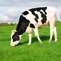

The cat (Felis catus), also referred to as the domestic cat or house cat, is a small domesticated carnivorous mammal.
Rabbits or bunnies are small mammals in the family Leporidae (which also includes the hares), which is in the order Lagomorpha (which also includes pikas).
The lion (Panthera leo) is a large cat of the genus Panthera, native to Sub-Saharan Africa and India. It has a muscular, broad-chested body; a short, rounded .
Cattle are large, domesticated, bovid ungulates widely kept as livestock. They are prominent modern members of the subfamily Bovinae and the most widespread species of the genus Bos. Mature female cattle are called cows and mature male cattle are bulls.
